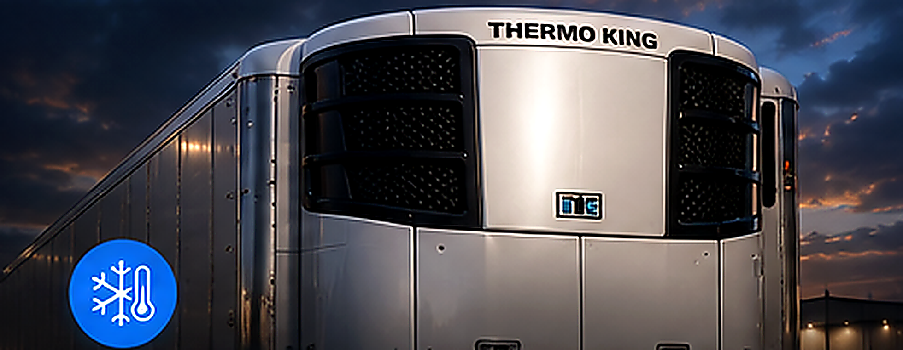
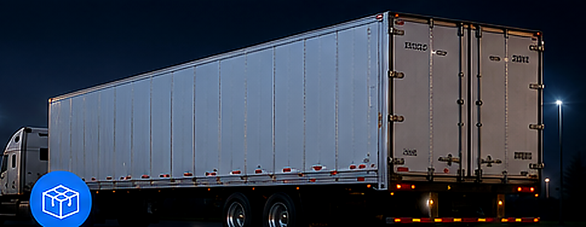
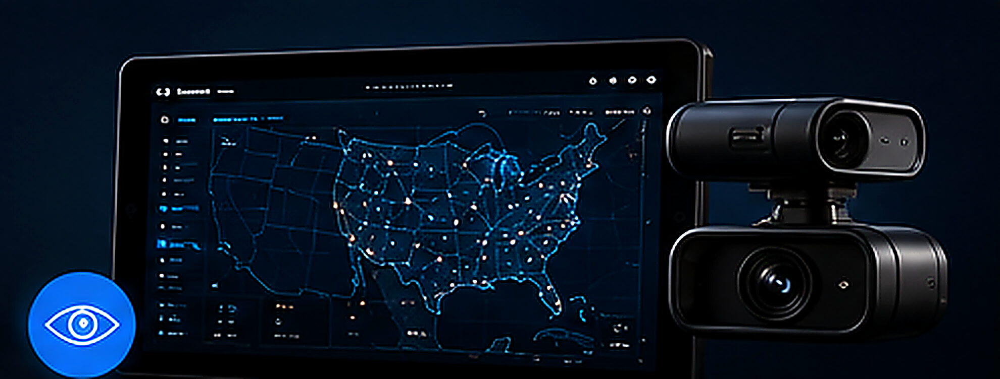
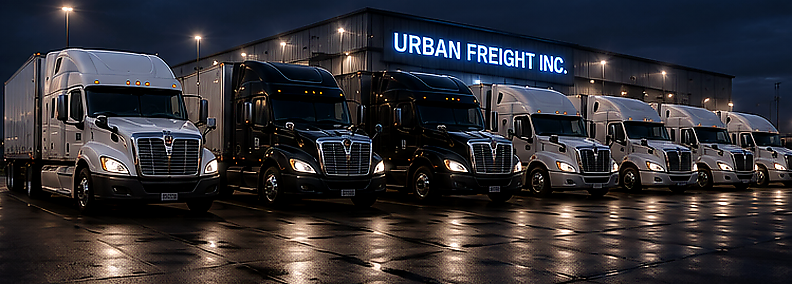
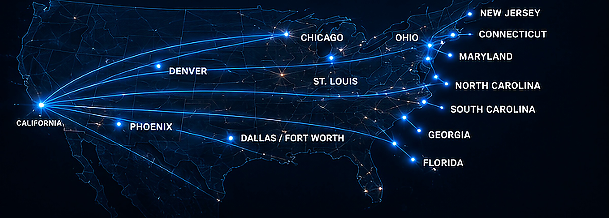

TEMPERATURE CONTROLLED
Reefer Freight
2024+ Thermo King refrigerated equipment with live trailer temperature monitoring for produce, food products and temperature-sensitive freight.
Reliable reefer and dry van transportation across the U.S. backed by modern equipment, real-time visibility, and a team that stays directly involved from pickup through delivery.
Capacity for brokers, shippers and direct customers—supported by responsive dispatch, connected equipment and clear load visibility from pickup through delivery.

2024+ Thermo King refrigerated equipment with live trailer temperature monitoring for produce, food products and temperature-sensitive freight.

53' dry van capacity for general and time-sensitive truckload freight across our nationwide network.

Samsara GPS, dash cams and live trailer temperature monitoring work alongside Vector TMS so our team can manage every load with current information.
Late-model tractors, 53' reefer and dry van capacity, and connected fleet technology built around visibility, communication and dependable execution.

Recurring long-haul service from California into major freight markets across Texas, the Midwest, Southeast, Mid-Atlantic and Northeast—with California regional capacity when needed.

Send the lane to dispatch and our team will confirm equipment, timing and availability directly. Load updates stay connected through our operations stack instead of disappearing into a black box.